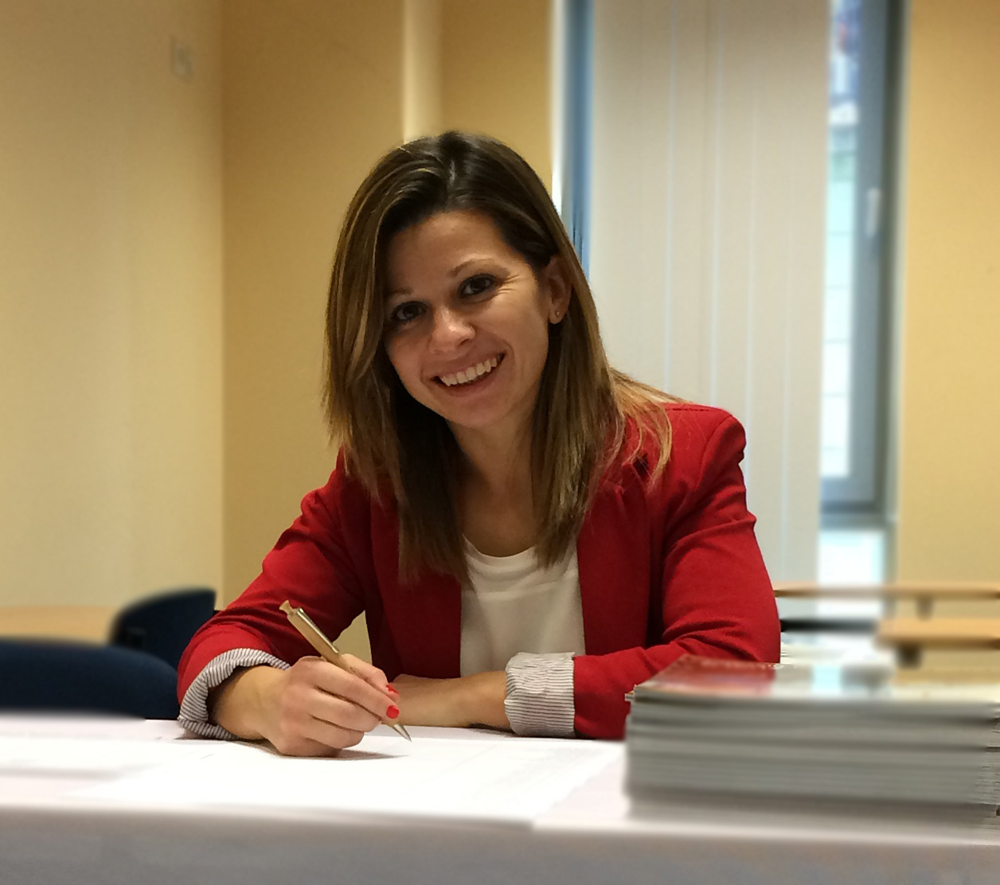

Pintér Éva

Summary
Over the past few years, I have beein fortunate to work with students and
faculties ffrom all over the world,
which has provided me with a confident knowledge of English and an
empathetic, friendly attitude.
Sport is a defining part of my everyday life, it plays a big role in me
being able to adapt easily to my peers,
but I am slo able to achieve my goals on my own. It taught me patience,
precision, concentration, perseverance,
which I can use in my work.
Education
-
Economist, marketing specialization - Széchenyi István University
(2009)
- Logistics clerk - OKTÁV Training Center (2016)
Work experience
-
Study Coordinator - ESSCA School of Management
August 2009 - Present
- Full administration of study semester
- Planning, organizing and coordinating projects
- Administrative support
- IT support
- Preparing reports, statistics, presentations
Skills
- MS Office: ⭐⭐⭐⭐⭐
- MS TEAMS:⭐⭐⭐⭐⭐
- Photoshop:⭐⭐⭐⭐
Soft Skills
- Logical, analytical approach
- Accuracy, precision
- Reliability
- Problem-solving skills
- Openness to learning new things
Language Skills
- English: Advanced
- German: Conversational
- French: Conversational
Other